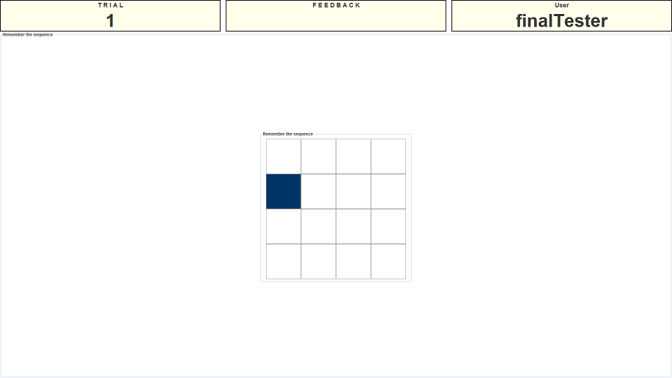

Instructions
Presentation Phase
This is the matrix span task. This task is a simple visuo-spatial memory task. You will be shown a 4x4 matrix in the center of the screen. A number of the grids in this matrix will turn blue one at a time (between 2 and 7 grids in any one trial). Image one shows an example of what the matrix looks like while one of the grids is coloured.

You need to remember the grids that you are presented with in the correct order that they were presented.
Recall Phase
After you have been shown the grids to remember you will be presented with an empty grid that you can use to input your response. Simply click the grids in the order you remember seeing them light up. Once you click a grid it will change colour to indicate you have selected it. Image two shows an example of what the task looks like while somebody is midway through inputting their response.